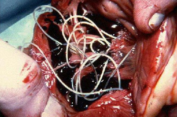
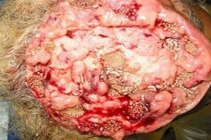
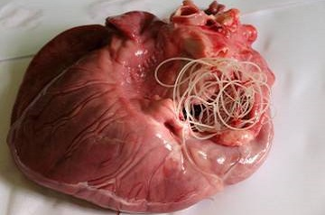

РБИЧКИ ПОД ОЧИТЕ? ЛОШ ДЪХ? ЗАМЪРСЕН ОРГАНИЗЪМ? ТОВА МОЖЕ ДА СЕ ДЪЛЖИ НА ПАРАЗИТИ
Cпециалист Иван Маринков, завеждащ звено в институт по паразитни болести.
Cпециалист Маринков е публикувал повече от 70 научни статии по молекулярна паразитология. 21-годишен професионален опит.
Институт по паразитни болести е открил нова причина за халитозата (лош дъх): заразяване с паразити. Наскоро завършено изследване доказва, че отпадъчните продукти от паразитите са токсични и създават благодатна почва за гнилостните бактерии в стомаха. Това е причината, поради която хората, заразени с паразити, имат лош дъх.
Ще обсъдим този здравен проблем с Иван Маринков, завеждащ звено в институт по паразитни болести.
— - Благодаря ви за гостуването. Ще започнем с основния проблем. Вярно ли е, че болшинството от населението на България е заразено с паразити?
Да. В сравнение с други страни, ние заемаме една от водещите позиции. Поради лошото екологично състояние, бездействието на властите и безразличието на хората.
— - Верни ли са резултатите от изследванията, които показват връзка между заразяването с паразити и лошия дъх?
Допреди броени години, медицинската общност смяташе, че лошият дъх се е проблем, изцяло зароден в устната кухина. Въпреки това последните проучвания показват, че проблемите със стомаха и черния дроб (които винаги се наблюдават при паразитните болести) също водят до лош дъх. Учените също подчертават, че този привидно "нормален симптом" не трябва да се игнорира. Заразяването с паразити винаги води до сериозни болести.
Аз лично имам доверие на резултатите от изследването, проведено в нашия институт. Обичайният "лош дъх" се превръща в сериозно заболяване. Около 92% от смъртните случаи сред хората са причинени от паразитни болести. И не става дума само за смърт поради заболяване.
- Когато говорим за паразити, обикновено имаме предвид червеи. Нима те причиняват лош дъх и дори смърт?
В действителност е голяма грешка да се смята, че единствените паразити са червеите. Има огромно разнообразие от паразити, които живеят в различни органи на тялото. И те причиняват различни оплаквания. И между другото, многоклетъчните червеи — или по-точно казано хелминтите, са много опасни. Те буквално унищожават червата, причинявайки разлагане и в крайна сметка смърт. Но дори червеите трудно могат да бъдат намерени и унищожени.
Наред с тях има хиляди паразити, които могат да живеят в черния дроб, мозъка, белите дробове, кръвта или стомаха. И почти всички от тях са смъртоносни. Някои от тях незабавно започват да действат агресивно и да унищожават тялото. Други паразити живеят незабелязано, докато броят им не стане толкова голям, че тялото не може повече да се бори и така човекът умира.
В същото време мога да кажа уверено, че практически в тялото на всеки има паразити. Проблемът е, че повечето много трудно могат да бъдат открити. И чак когато последиците от инфекцията стават забележими, специалистите се опитват да ги отстранят. Дори и при аутопсия са нужни специални тестове, за да се открият паразити. Поне за повечето от тях.
Има хиляди паразити, които могат да живеят в черния дроб, мозъка, белите дробове, кръвта, стомаха. И почти всички от тях са смъртоносни. Всичко обикновено започва просто с лош дъх.
- Може ли да дадете конкретни примери на заразяване с паразити?
Мога да изброя стотици случаи. Но по-скоро ще се съсредоточа върху онези примери, които демонстрират ясно опасността от паразитите.
Първо, оказа се, че някои тении могат да причинят рак. Освен това червеите са тези, които се развиват рак първи. Но злокачествените клетки от тях се разпространяват из тялото на човека, заразявайки го. Това се случва, когато на ларвите на паразита стигнат е лимфните възли от червата. Те съответно се превръщат в ракови образувания и в заплаха за човека. Смъртта настъпва буквално в рамките на няколко месеца. Пореден случай на смърт от такъв тумор имаше миналата седмица.
В снимката: клетки на злокачествен тумор, дължащ се на паразитни червеи.
Друга често срещана цел на паразитите е мозъка. Заразяването му води до неврози, бърза умора, прекомерна раздразнителност и внезапни промени в настроението. И в по-напреднал стадий, с увеличаването на паразитите в мозъка, се развиват по-сериозни заболявания и в крайна сметка се стига до летален изход.
Пазим фото архив на аутопсии, при които са открити паразити в различни органи на тялото. Ето само няколко снимки, но трябва да ви предупредя, че гледката не е приятна.
Паразити в жлъчката на мъж:

Паразити в мозъка, които причиняват рак:

Червеи в сърцето, които предизвикват сърдечен арест:

Третият пример е заразяване на човешко сърце. Смята се, че това заболяване е много рядко. Но в действителност, паразити в сърцето се намират у приблизително 23% от хората. Или с други думи у всеки четвърти човек. В началния стадий те са напълно неоткриваеми и нямат влияние върху организма. Но с времето броят им се увеличава и започват да стават забележими. Те са в основата на много болести на сърцето и ако говорим за внезапна смърт вследствие на сърдечен арест, паразитите са причината в почти 100% от случаите.
- Има ли някакви други опасни последици от заразяването с паразити?
При мъжете, паразитите причиняват простатит, импотентност, аденома, цистит, камъни в бъбреците и пикочния мехур.
При жени той причиняват болка и възпаление на яйчниците, миоми, маточни фиброми, т.н. бучки в гърдата, както и възпаление на надбъбречната жлеза, пикочния мехур и бъбреците. И, разбира се, тези проблеми са придружени с преждевременното стареене на кожата, бръчки, торбички под очите, брадавици и папиломи по лицето и тялото.
— - Как да се предпазим от паразитите? Има ли някакви изследвания, лекарства?
За съжаление, може да се каже, че няма сигурни методи за диагностициране на паразити в тялото. Това е донякъде поради съществуването на много видове паразити (известни са повече от 2000 вида) и отчасти поради затрудненото им откриване. Цялостно изследване за паразити може да се направи само на 1-2 места в страната и ще струва много скъпо.
Симптомите на паразитна инфекция, са следните:
• лош дъх;
• алергии (обриви, сълзене очи, хрема);
• хемороиди;
• дерматофитии;
• обриви и зачервяване на кожата;
•чести настинки, възпалено гърло, запушен нос;
• хроничната умора (когато умората настъпва бързо, независимо от извършваната дейност);
• често главоболие;
• запек или диария;
• болки в ставите и мускулите;
• нервност, безсъние и нарушения на апетита;
• тъмни кръгове и торбички под очите.
Ако при вас се среща дори един от симптомите, тогава има 99% шанс да страдате от паразитна болест. И трябва да се отървете от паразитите възможно най-скоро!
Говорейки за лекарства, има няколко важни фактора. Към момента има само едно решение, което позволява да се отървете от паразитите.
Противопаразитен препарат Parasinea. Разработен от колегите ми в Института по паразитология в сътрудничество с международен екип от учени. За целта бяха изследвани около двадесет различни противопаразитни лекарства. Но по време на проучването става ясно, че само Parasinea е наистина ефективен.
Parasinea съдържа уникално съчетание на екстракти от камшиче, лавдан, семена от псилиум и семена от живовляк. По време на разработването му и последващите клинични изследвания, този препарат се доказа като изключително ефективен. Днес това е единственото средство за защита, което осигурява видими резултати. Що се отнася до цената му, лекарството можеше да бъде насочено изцяло за износ. Тъй като хората по света са готови да платят почти всяка цена за Parasinea.
Има много положителни отзиви от тези, които вече са го опитвали.
- Какво прави Parasinea толкова специален? Каква е разликата между този препарат и други противопаразитни продукти?
Както вече казах в момента, това е единственото работещо решение против паразити в целия свят. Помага за пълното прочистване на организма от паразитите. Затова е толкова търсен от международните аптечни вериги и фармацевтичните компании. В сравнение с други антипаразитни лекарства, Parasinea действа пряко срещу целия диапазон от паразити, които могат да се срещат в човешкото тяло. Като се вземат предвид проблемите с трудната диагностика, само това позволява ефективното прочистване на цялото тяло. Вече споменах, че е почти невъзможно да се разбере с какъв вид паразити е заразен даден човек. А Parasinea унищожава и отстранява всички паразити, живеещи в тялото, независимо в която част на тялото — от мозъка и сърцето до черния дроб и червата. Няма други медикаменти днес, които да могат да постигнат същите резултати.
Освен това, лекарството не е продукт на химията, а напълно естествен продукт и така се гарантира, че няма да доведе до алергични реакции, дисбаланс на чревната флора и други проблеми, които могат да възникнат при лечение на заболяване с класически хапчета, при което тялото трябва да обработи много химически вещества.
Това е официалният резултат от лабораторни изследвания, извършени на Parasinea в институт по паразитни болести.
1. Ефективността на Parasinea®, изчислена чрез стандартна техника (съотношение на броя на излекуваните пациенти спрямо общия им брой в група от 100 души, които са лекувани с препарата):
• Премахване на паразитите и яйцата им 100%
• Нормализиране на функцията и състоянието на панкреаса: 80%.
• Премахване на алергичния дерматит: 90%
• Премахване на гастрит, язва и диария: 90%
• Премахване на анемия: 100%
• Премахване на лош дъх: 100%
2. Не са наблюдавани отрицателни странични реакции, в число и алергичен дерматит.
3. Parasinea® е признат за водещо лекарство в борбата с паразитите в човешкото тяло.
- Мисля, че нашите читатели биха искали да знаят откъде могат да закупят Parasinea?
Можете да го поръчате от официалния уебсайт на производителя. За съжаление, аптечната мрежа иска да наложи много голяма надценка. Тъй като искат да генерират по-големи печалби. Но учените, които са създали продукта, са против това. Като специалист искам всички хора в страната да бъдат в състояние да си позволят продукта.
Надявам се, че с течение на времето ще успеем да постигнем споразумение и Parasinea. ще се продава и в аптеките в страната. Междувременно може бъде поръчан само онлайн. Процесът е съвсем прост и лесен — продуктът може да се достави по пощата или с куриер, като се плаща с наложен платеж при получаването на доставката. Нищо друго не ви е необходимо.
Parasinea може да се поръча от официалния уебсайт..